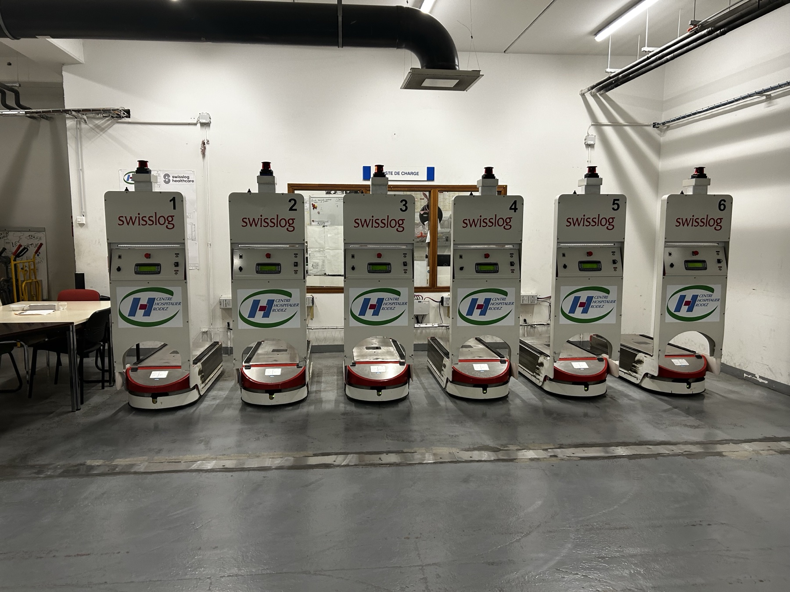

Expérience terrain
6 robots. Une disponibilité
de chaque instant.

Au Centre Hospitalier de Rodez, je supervise une flotte de 6 AGV Swisslog qui approvisionnent tout l'hôpital : repas, linge, déchets, pharmacie. Mon rôle, chaque jour : qu'elle ne s'arrête jamais.
01
Surveillance
Je suis les déplacements des AGV depuis le poste de supervision.
02
Diagnostic
Robot à l'arrêt : j'identifie la cause (obstacle, capteur, défaut).
03
Remise en service
Je traite ce qui relève de mon périmètre et relance l'équipement.
04
Traçabilité
Je trace en main courante et passe le relais à la maintenance si besoin.


0
AGV supervisés au quotidien
+0
interventions de 1er niveau / jour
/20
le rythme d'alternance visé